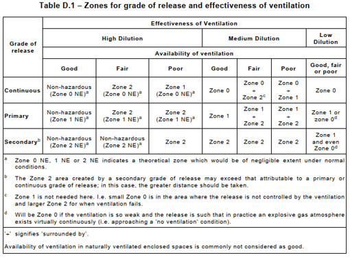
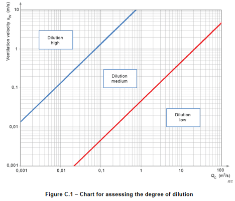
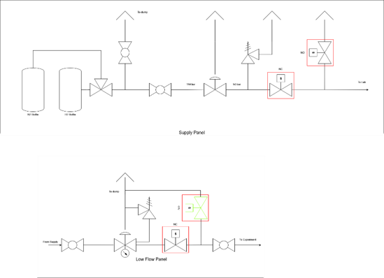
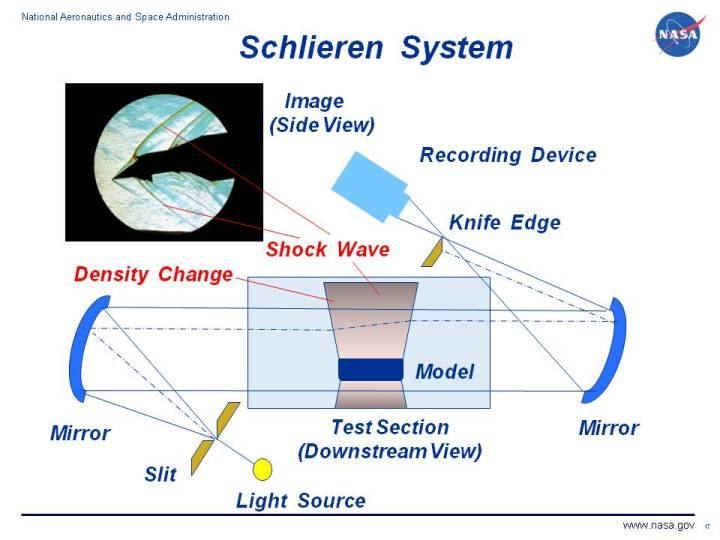
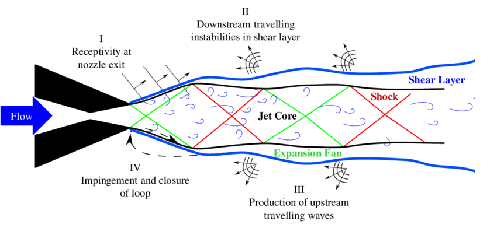
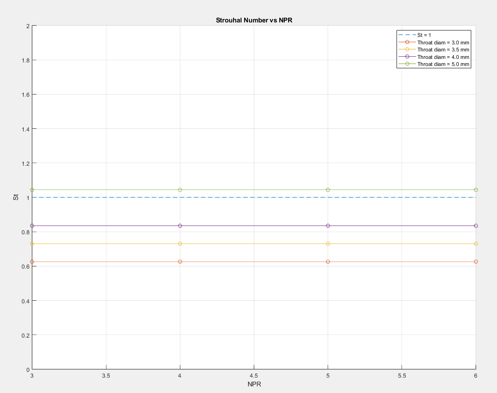

Scope
- Since hydrogen leaks act as choked free jets, they are anticipated to produce distinct jet screech tones with spectral classifications different from air. Acoustic detection could reduce reliance on slow, localised particle detectors.
- Complete a feasibility study on the safety of creating a hydrogen jet facility at Monash, compliant with AS/NZS IEC 60079.10.1.
- Design and build a safe, remotely operated hydrogen jet facility in the Monash Shock Lab with integrated e-stop, nitrogen purge and local extraction systems.
- Commission the facility and take first measurements of a hydrogen jet with high-speed schlieren and acoustic microphones. Analyse the data using SPOD and PSD to characterise hydrogen screech tones.
Key Characteristics
Acoustic leak detection
Investigating whether hydrogen leaks can be detected acoustically via jet screech tones before standard particle detectors register them, potentially reducing cost and response time across large hydrogen farms.
Safety classification
Per AS/NZS IEC 60079.10.1, the facility will be classified Zone 1 NE (negligible extent), effectively non-hazardous during operation, with a self-imposed factor of safety of 4 on the lower explosive limit.
Jet sizing
Nozzle limited to 3.5 mm diameter to maintain safe extraction at 19 m/s across pressure ratios up to 6, yielding 43.8 L/s hydrogen volumetric flow at NPR 6 with a 1.25 FoS on mass flow.

Zone planning
Test cell zone map showing separation barriers, restricted access areas and safety buffer distances.
Design Overview
Problem and motivation
- Global hydrogen market expected to reach US$1.4 trillion by 2050, demanding large-scale farms with cost-effective, instantaneous leak monitoring.
- Traditional particle detectors are slow (require dispersion before detection), localised, and expensive. Acoustic detection could detect leaks at the speed of sound with range limited only by microphone sensitivity.
- Hydrogen is stored at 100-300 bar or as sub-cooled cryogenic liquid, therefore all leaks act as choked free jets which should produce distinct screech tones via an aeroacoustic feedback loop.
- These spectral signatures are expected to be different from air and characterisable with lab equipment.
Regulatory compliance and safety
- Governed by AS/NZS IEC 60079.10.1 (Explosive atmospheres) and WorkSafe Victoria regulations.
- Hydrogen LEL is 4% by volume, self-imposed cumulative FoS of 4 gives max allowable concentration of 1% by volume in the lab.
- Jet classified as "primary" release grade with Type B opening; Shock Lab ventilation provides 19 m/s extraction, rated "high" dilution for release rates under 1500 L/s.
- Result: Zone 1 NE (negligible extent), effectively non-hazardous, no ex-rated equipment needed.
- Atmospheric hydrogen detectors placed throughout the facility as redundancy, set to alarm at 25% of LEL.

Dilution analysis
AS/NZS IEC 60079.10.1 dilution chart showing high dilution grade for various extraction velocities and characteristic flowrates.
Fluid system design
- Gas feed system uses strict remotely controlled order of operations to isolate personnel from the test cell during hydrogen flow.
- E-stop routed to operator's control station that initiates an automated abort that isolates H2 supply, cuts power to NO and NC pneumatic valves to dump line pressure into safe extraction, triggers N2 purge.
- Nitrogen purge runs before H2 flow, during e-stop, and after each test to ensure no combustible mixtures remain in feed lines.
- All components are Swagelok for minimum leaks, maximum compatibility and high reliability.

P&ID design
Process and instrumentation diagram showing the hydrogen feed, vent and purge layout.

Supply panel
Hydrogen supply and fluids control panel integrating pressure regulation, flow metering and isolation valves.
Jet sizing and thermodynamics
- Converging nozzle sized using isentropic flow equations; 1.25 FoS on mass flow gives max nozzle diameter of 3.5 mm.
- At NPR 6, hydrogen volumetric flow rate is 43.8 L/s, with LEL factor this is below the extraction system's 1500 L/s ceiling.
- Thermodynamic modelling accounts for substantial cooling of H2 as it expands through the nozzle, rapid temperature drop increases local gas density, altering real mass flow rate and acoustic signature versus room-temperature assumptions.
Measurement methodology
- High-speed schlieren imaging (up to 500 kHz) and acoustic microphones used for measurement.
- Acoustic phenomena of interest expected at Strouhal 0-0.2 for H2 based on LES from literature, equipment allows measurements up to Strouhal 1.46.
- Minimum Strouhal 1 resolved to capture any potential screech tones, matching maximum expected for air.
- First tests with inert nitrogen to eliminate flammability risk during commissioning.
- Data analysis using SPOD and PSD to locate screech tones and characterise acoustic spectra.

Schlieren imaging
High-speed schlieren setup for visualising shock cell structure.
Literature review and predictions
- Jet screech produced by an aeroacoustic feedback loop, downstream turbulence interacts with shock cells, generating upstream acoustic waves that cause a feedback loop [2]. Well characterised for air but largely unexplored for hydrogen.
- LES of highly under-expanded H2 jets (Haseeb Ali et al. [5]) predict screech at Strouhal 0-0.2, significantly lower than air (up to ~1).
- Choked flow ensures constant exhaust velocity regardless of pressure ratio for converging nozzles, frequency becomes the primary Strouhal variable for a given nozzle diameter.
- At 3.5 mm nozzle and NPR 6, Strouhal 0.2 corresponds to ~75 kHz, within microphone and schlieren range.
- SPOD will isolate coherent flow structures, PSD will identify dominant frequency peaks and validate LES predictions against experiment.

Screech mechanism
Schematic of the aeroacoustic feedback loop showing how downstream turbulence interacts with shock cells, generating upstream acoustic waves that excite new disturbances at the nozzle lip.

Strouhal predictions
Predicted Strouhal number against nozzle pressure ratio for various jet diameters, at 250 kHz measurements.
- [2] Edgington-Mitchell et al., "A unifying theory of jet screech," Journal of Fluid Mechanics, vol. 945, 2022. Establishes the aeroacoustic feedback loop model for screech generation in supersonic jets.
- [5] Haseeb Ali et al., "Large-Eddy simulation of highly under-expanded hydrogen jets using a low dissipative solver," International Journal of Hydrogen Energy, 2025. LES predictions of hydrogen screech Strouhal numbers in the 0-0.2 range.
Commissioning and testing
- Assemble all fluid panels, leak test individual sections, then complete assembly leak test with inert N2.
- Full actuation tests confirm controller, e-stop and purge functions work as intended.
- Project at late feed system design stage, purchasing scheduled end of semester, followed by jet design and manufacturing.
- After commissioning and H2 testing, data will be analysed with SPOD and PSD to characterise screech tones and determine viability of acoustic leak detection for the hydrogen industry.